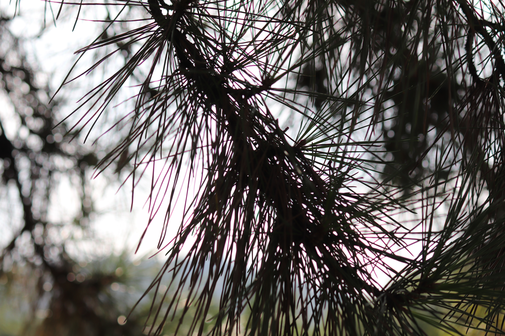

관다발식물문 소나무목 소나무과
소나무(Pinus densiflora)
“우리나라를 대표하는 사시사철 푸른 나무”
높이 35m, 지름 2m 정도로 자라는 나무로 가지가 퍼지고 수피는 적갈색 또는 짙은 갈색으로 암수한그루로 새 가지의 밑에 자란다
- 수꽃 : 새 가지의 밑에 여러 개 달리며 타원형이고 갈색이다.
- 암꽃 : 위쪽에 1~3개가 달리고 길이 6mm 정도로 난형이다.
잎은 바늘모양으로 2개씩 뭉쳐나며 길이는 8~14cm, 폭 1.5mm 정도이다. 2년마다 잎갈이를 한다.
열매는 난형 또는 타원형으로 9~10월에 흑갈색으로 익으며 날개 달린 씨가 나온다. 열매조각은 70~100개 정도이고 타원형이다.